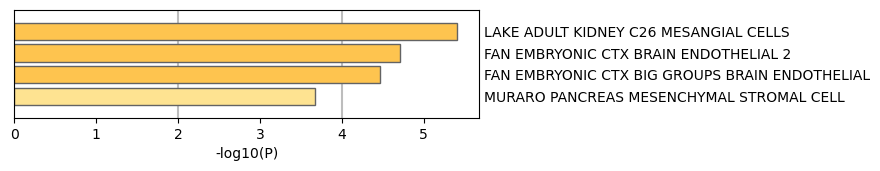

Metascape Gene List Analysis Report
metascape.org1Gene Lists
User-provided gene identifiers are first converted into their corresponding human Entrez gene IDs using the latest version of the database (last updated on 2024-01-101). If multiple identifiers correspond to the same Entrez gene ID, they will be considered as a single Entrez gene ID in downstream analyses. The gene lists are summarized in Table 1.Table 1. Statistics of input gene lists.
| Name | Unique |
|---|---|
| Trpc3 | 6 |
Protein-protein Interaction Enrichment Analysis
For each given gene list, protein-protein interaction enrichment analysis has been carried out with the following databases: STRING2, BioGrid3, OmniPath4, InWeb_IM5.Only physical interactions in STRING (physical score > 0.132) and BioGrid are used (details). The resultant network contains the subset of proteins that form physical interactions with at least one other member in the list. If the network contains between 3 and 500 proteins, the Molecular Complex Detection (MCODE) algorithm6 has been applied to identify densely connected network components.Quality Control and Association Analysis
Gene list enrichments are identified in the following ontology categories: Cell_Type_Signatures. All genes in the genome have been used as the enrichment background. Terms with a p-value < 0.01, a minimum count of 3, and an enrichment factor > 1.5 (the enrichment factor is the ratio between the observed counts and the counts expected by chance) are collected and grouped into clusters based on their membership similarities. The top few enriched clusters (one term per cluster) are shown in the Figure 1. The algorithm used here is the same as that is used for pathway and process enrichment analysis.
Figure 1. Summary of enrichment analysis in Cell Type Signatures7.
|  | ||||||||||||||||||||||||||||||
|
|
||||||||||||||||||||||||||||||
|
Reference
- Zhou et al., Metascape provides a biologist-oriented resource for the analysis of systems-level datasets. Nature Communications (2019) 10(1):1523.
- Szklarczyk D. et al. STRING v11: protein-protein association networks with increased coverage, supporting functional discovery in genome-wide experimental datasets. Nucleic Acids Res. (2019) 47:D607-613.
- Stark C. et al. BioGRID: a general repository for interaction datasets. Nucleic Acids Res. (2006) 34:D535-539.
- Turei D. et al. A scored human protein-protein interaction network to catalyze genomic interpretation. Nat. Methods. (2016) 13:966-967.
- Li T. et al. A scored human protein-protein interaction network to catalyze genomic interpretation. Nat. Methods. (2017) 14:61-64.
- Bader, G.D. et al. An automated method for finding molecular complexes in large protein interaction networks. BMC bioinformatics (2003) 4:2.
- Subramanian A, et al. Gene set enrichment analysis: A knowledge-based approach for interpreting genome-wide expression profiles. Proc Natl Acad Sci U S A 102, 15545-15550 (2005).